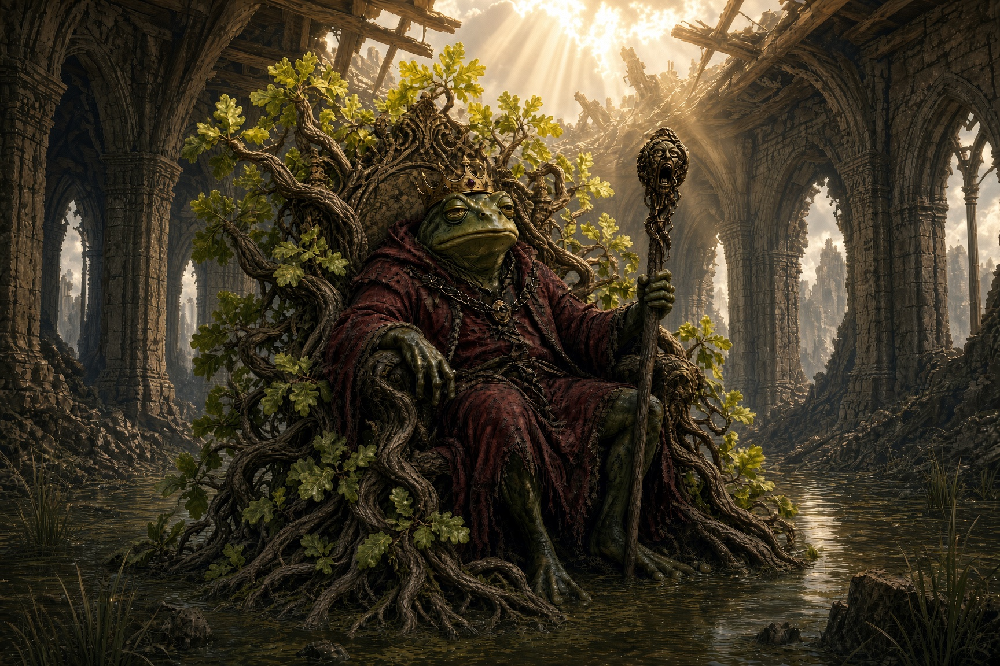

100%

Once upon a time, on the green banks of a wide and whispering river, there stood a small but proud kingdom. Its towers rose bright above the water, its fields stretched rich and golden, and its people lived in easy comfort. The river was kind to them and always had been. It never flooded past its limits, never turned suddenly, never raced and dashed children. The people thought of it as their mother, kind and considerate and consistent and they happily built bridges, boats, and irrigation to enjoy her to the fullest.
The people feared no invasion for they were a small kingdom surrounded by mountains and a deep impenetrable forest and the river was alone the way to enter their valley. They feared no plagues for their trade was handled at the borders and few people ever stopped to stay there. It was a kingdom of leisure, a kingdom of slow, lazy happiness, where nothing would ever change.
At the heart of it all sat their King upon his high throne of carved oak. It had been a gift from the Elves of the deep forest eons past, and it was beautiful. And it was still alive. The King loved that throne more than he loved the changing seasons. Indeed it changed with the seasons itself, though the kingdom seemed immoveable even by time. In spring buds and flowers would sprout from the throne. In summer the great broad leaves would grow. In autumn the leaves would turn the most riotous shades of orange, yellow, and red. At last in winter, the throne would sit quite still, as though it were an ordinary chair.
There was one law in the land that the peasants made private jokes of, one bit of hubris of the king and his family: The Throne was declared the center of the kingdom, never to be moved and all measures of distance within the kingdom were to be based on the chairs' dimensions.
One day, the King was holding court, and a peasant came before him bowed low, and asked to take measure of the throne that he might settle a dispute with his neighbor. The King was all too happy to grant the request when there was the sound of a terrible thunderclap out of the blue sky. The towers shook and the people were afraid for nothing like this had ever happened before.
In time, the kingdom recovered from its fright, but in the weeks that followed, as people finally came out of their houses and from hiding, they found that something was wrong. The water was higher than it was before. The children began to say that the thunderclap had frightened even their poor, old mother and she was running about the countryside in fear. The king took his knights and concerned folk and began to search for the source of all the new water and in time they found it.
It was found in a newly forming marsh. It was a strange thing, a little piece of crystal, dark as smoke and heavy, only about as large as a man's hand. And it poured water. It was hard to hold. The king tried to have it taken from the kingdom, sent downstream, but it could not be lifted, it felt as though it weighed as much as the ocean. The king tried having it dragged out by horses, but none could be brought near it. They frighted or they would sink in the soft ground. The king tried to have it hit with large hammers to destroy it, but when they did, it turned into innumerable little pieces that spread throughout his kingdom. The flood spread and there was nothing the king could do about it.
Year by year the river grew more and more restless. The once perfectly predictable floods crept higher. The Summer rains lingered longer and longer. Autumn mists thickened into permanent marsh. The land that had been firm beneath their feet softened into reeds and black water.
People were worried and unsure of their futures. They begged the king to rebuild his castle elsewhere before it sank into the river and his beautiful throne and all the stability it gave them was lost. The King would not move.
"This is our home," he declared. "The river may rise, but we shall not yield. We will find some way to keep going on as we always have."
The people did not like the sound of that. Some packed their belongings and walked inland to higher ground. Others stayed, choosing to trust the King. At last the floods came so fiercely that the fields drowned and the lower halls of the palace stood ankle-deep in dark water. The King climbed the steps of his throne and would not leave it.
In the deepest night he called upon the First Voices: the faeries who walk between forms, the gods who remember the first mud. He lit the ancient fires, spread incense of a secret recipe known only to his family, and spoke the old words.
"Preserve my kingdom," he begged. "Make the land as it once was, firm and dry, so that my throne may stand forever."
The voices that answered were neither kind nor cruel. They were simply true. "We cannot unmake the river," they said. "The waters have claimed what they will claim. But we can change those who remain, so that they may live where the water lives." The King opened his mouth to refuse. Before the word left his tongue, the change took them all.
Skin turned cool and damp. Arms shortened. Legs grew long and powerful for leaping. Some became frogs of emerald and gold. Some became toads of mottled brown and bumpy skin. Some slipped into the forms of salamanders with bright, watchful eyes, and others into soft, smiling olms that hid from the sun and breathed the water and silt itself.
The King's crown sat crooked upon a wide, green head. His throne of oak sank slowly into the marsh, yet he remained upon it, for a frog may sit where a man cannot.
The people who had fled looked back from the high hills and wept, for they saw that their kin were gone and something new lived in their place. The people who remained discovered they could breathe the wet air, swim the black channels, and sing through the long nights in voices the river understood.
The King looked upon his changed hands and felt the weight of what he had refused. He had asked the world to alter itself for him. Instead the world had altered him. Yet the kingdom endured.
The towers became moss-covered rises in the swamp. The court became a chorus of croaks and soft calls. The throne, though half-sunk, was still a throne, and a king still sat upon it. In time the Frog King learned to rule the waters as once he had ruled the dry land.
He sent his people outward now and then, each carrying one chance to walk again in human shape if the world required it. Some returned. Some did not. All of them remembered.
And so the Frog Kingdom was founded—not by conquest or by miracle of unchanged earth, but by the hard mercy of transformation. The river kept rising. The people kept living. And children of that realm, when they gather in the reeds at dusk, still tell the story.